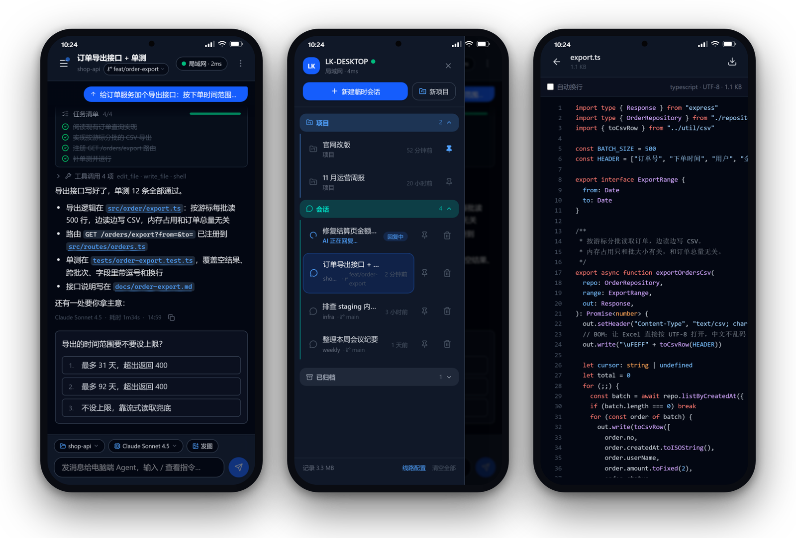
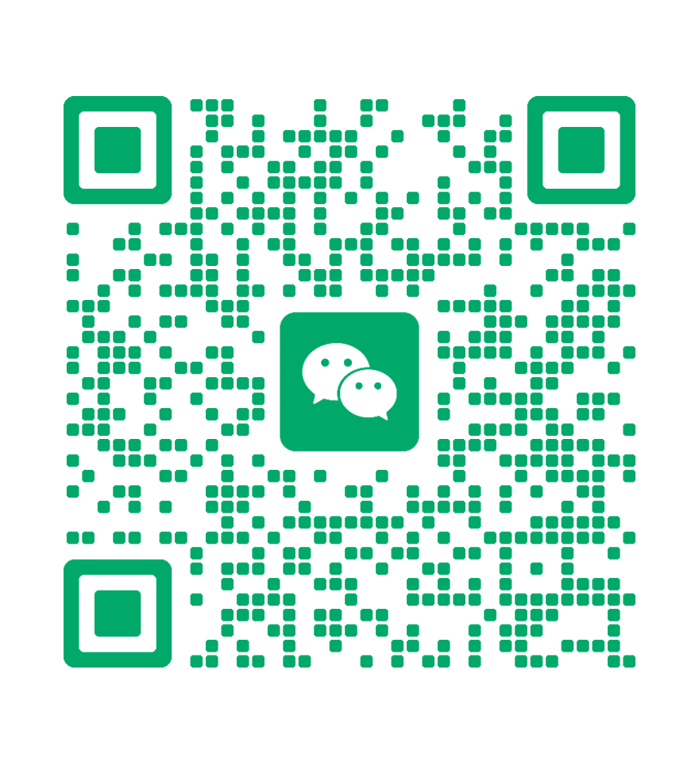

四个入口，同一条会话
应用内对话不用接任何 IM。手机用 Android APK 或浏览器扫码配对，局域网和公网线路自动择优（公网需自备穿透）。飞书走长连接，不需要公网回调；微信扫码接入，仅限自己使用。
它不是新的模型，也不是把 IDE 搬进聊天窗口。它让你已有的 Agent 在你自己的电脑上持续运转，而你可以随时接手。
Agent 在你自己的目录和仓库里运行，应用常驻后台。接入 Cursor 账号，或 OpenAI、Anthropic、DeepSeek 等大模型 API 就能用。
应用内对话页、手机、飞书、微信，指向同一条会话。文字、图片、文件都能双向收发。
思考和工具调用实时回传。AI 遇到分叉会抛出选项，点一下它就继续；想插话，直接打字。
用 Android APK 或浏览器扫码配对，就能和电脑上的 Agent 接着聊：看进度、发消息和图片、点选问题、切模型、预览文件。

能看、能插话、能叫停、能定时，让一件事不必守着也能跑完。
应用内对话不用接任何 IM。手机用 Android APK 或浏览器扫码配对，局域网和公网线路自动择优（公网需自备穿透）。飞书走长连接，不需要公网回调；微信扫码接入，仅限自己使用。
思考与工具调用按时间线实时展示。AI 抛出的问题是点选卡片，支持多选，你选完它再带着答案继续。
AI 回复期间你再发的消息先进暂存区，可以编辑、撤回，或「立即发送」只打断这一轮。
文件和网页直接在应用里打开：代码（高亮、行号）、Markdown、HTML（沙箱，脚本默认关）、表格、图片、PDF、音视频、Word、Excel、压缩包清单。聊天里的路径点一下就开，file.ts:42 直接定位到行。手机端同样能看。
一个需求一个项目：选模板、填信息、选目录。内置通用任务、调研分析、文档写作、周报月报、活动策划、开发、测试，也可自定义。模板里的快捷操作，点一下让 AI 做这一步。
开发类可以克隆一份仓库副本，AI 在副本里改，不碰你本机那份。
Cron 任务由全新 Agent 独立运行，结果可以通知到 IM 或会话，设置页留有运行记录。
AI 也能给自己排程，比如「半小时后再看一眼构建结果」，次数、间隔和时限都有上限。
Cursor SDK，或 OpenAI、Anthropic、DeepSeek、Google Gemini、Groq、Mistral、xAI、OpenRouter，以及自定义的兼容网关。会话里用 /model 随时切换；长会话里的关键信息由会话记忆带进新一轮。
其他人默认只是受限的「访客」：能用网页搜索、抓取、待办和提问，碰不到你的 MCP、Skill 和管理能力，需要时再点名放行。飞书私聊和群聊分别开放，群按群开通。
凭据在系统支持时用系统密钥链加密保存。
挂任意 MCP，Skill 名单会告诉 AI；一键安装 lark-cli、meegle，让它读写飞书文档、日程和飞书项目。
另有 22 个内置工具，分五组、按会话和身份最小授权：建项目、改模板、排定时任务，直接对 AI 说一句就行。
应用跑在你自己的电脑上，负责路由、队列、会话、提示词装配和内置工具；AI 只负责干活的那一轮。
微信不支持按钮时，点选问题自动降级为文字选项。
消息队列、会话调度、提示词装配、内置 MCP、流式卡片、定时任务、项目、手机端网关。
同一套会话、规则和项目，引擎可换。
你的 git 仓库、lark-cli、meegle，以及你挂上的 MCP。
消息至少投递一次。整轮跑完才算「收到」，Agent 异常退出或应用重启后，没确认的消息会重投。打断、续聊和重试都由代码保证，不靠提示词去求 AI 记得。
这些在用之前就该知道。
安装包都在 GitHub Releases。装好后按三步引导走：接入 AI、选消息通道、装点工具（可跳过）。应用常驻托盘，之后可以在应用内更新。
新版在后台下载，退出时静默安装。
dmg 版支持应用内更新；也可以用 Homebrew 安装，见下方。
任选一种格式。
也内置在桌面安装包里，手机可以直接从电脑下载。
brew tap lk-eternal/tap brew trust --cask lk-eternal/tap/lk-harness brew install --cask lk-harness
应用未经 Apple 公证。先执行下面这行；仍打不开，就到「系统设置 → 隐私与安全性」点「仍要打开」。
xattr -cr /Applications/LK\ Harness.app
LK Harness 是 MIT 协议的开源项目，我在业余时间用爱发电维护。用着有问题、想提需求，可以去 GitHub 提 Issue，也可以加我微信聊聊；如果它帮到了你，请我喝杯咖啡，会让我更有动力继续做下去。
去 GitHub 提 Issue →